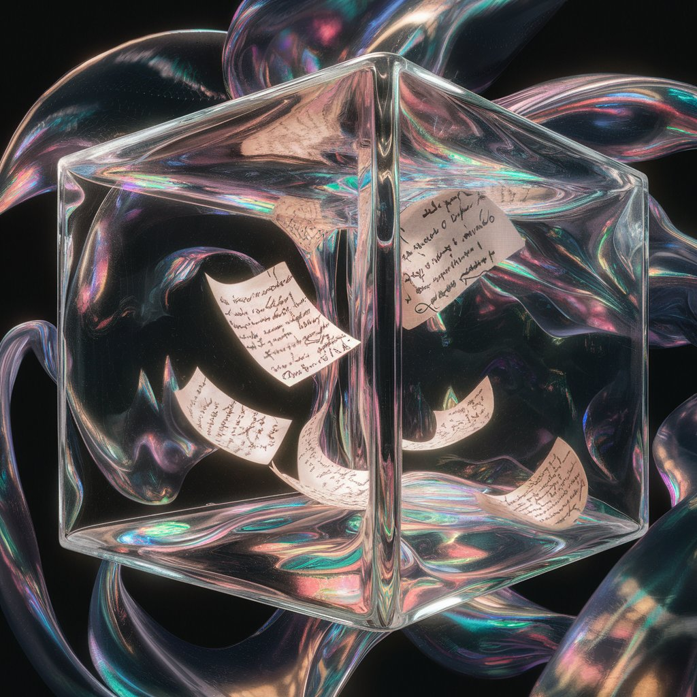

wordcount: 0
dg-publish: true
banner_icon: ⚙️
banner: "![[wind.gif]]"
How I Write My Notes
 Tags:: #Basics
Tags:: #Basics
 Resources:: What Is A PKM And Why Should You Care
Resources:: What Is A PKM And Why Should You Care
2024-01-11 - 11:04
This information can help you understand some of the tags that you see on the site. And if for some reason you're making your own PKM, then this can help you give a better idea of how a zettlekasten works.
Do note that, everyone has their own way of making their PKM. My way of creating notes may not suit you, and vice versa.
A PKM is like a jungle, there's just too much information. From books, podcasts, media, projects, and more. It can quickly get hectic to manage all this in a way that can make sense to you. Even if you make an insightful note that can have a huge impact, if you do not use a good naming and storing convention it would quickly be forgotten and lost.
So here is how I save my notes. This is based on the zettlekasten method with some minor tweaks of my own.
Types of Notes
Here are some types of notes that I use:
 Fleeting notes
Fleeting notes

Fleeting notes are basically your passing thoughts that you might have throughout your days. These can also be called emerging thoughts that you might have, which you can build on later.
Fleeting notes are usually small. Just a few sentences that can help you remind of your idea or thought.
You can either write them in your daily notes or create a special dashboard like I did that can show you all your fleeting notes in one place.
The purpose of fleeting notes is to remind specific information which can be written in any kind of way and will end up in trash.
 Literature Notes
Literature Notes
I use literature notes to save all the information that I consume. Things that I watch or read like, Movies, Anime, Podcasts, Books, etc.
I also use a plugin called omnivore to sync all the things I read online with my Obsidian vault.
 Permanent Notes
Permanent Notes
Permanent notes are when you read, analyze, learn, and then finally flesh out a full note that explains the idea in its full details, or at least in enough detail to explain your thoughts.
Permanent notes are usually long and can link to various things, like other internal notes, external articles, media, etc.
Do Note - Just because the name says permanent notes does not mean that they can't be tinkered with. You can always change your notes, add or subtract, as you find new information, or have new insights.
Nothing in this world is permanent, and permanent notes fall in the same category.
Project Notes
Project notes are relevant to only one particular project. They are kept within the project-specific folder and can be discarded or archived after the project is finished.
 Project Related Notes Can Be:
Project Related Notes Can Be:
- comments in the manuscript
- collections of project-related literature
- outlines
- snippets of drafts
- reminders
- to-do lists
- and of course the draft itself